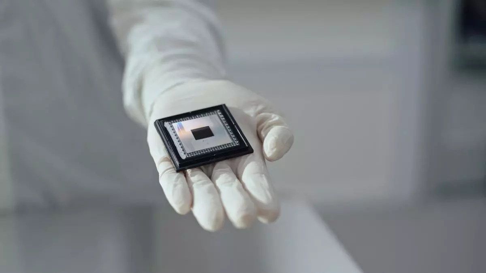
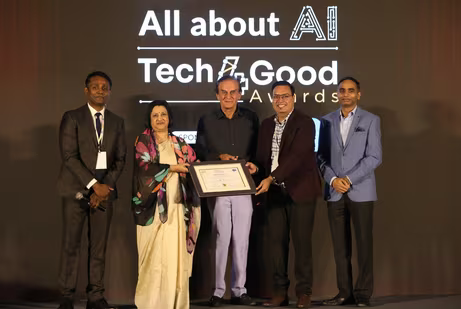
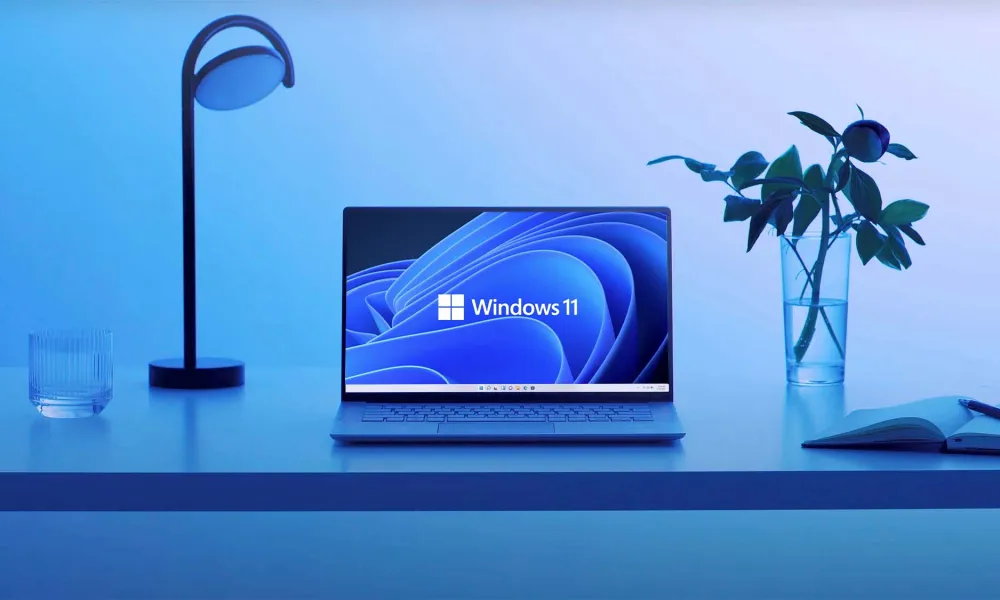

Japanese company builds AI-powered ‘human washing machine’; Know details

What if artificial intelligence (AI) could provide you with a spa? Yes, that’s what a Japanese company has reportedly worked on. Named ‘Mirai Ningen Sentakuki’, is the solution that the Japanese engineers have worked on. The name of the AI tool translates to ‘human washing machine of the future’ in Japanese. Let’s have a detailed look at what the AI tool brings on the table.
Created by Science Co. this futuristic pod promises to wash and dry you in just 15 minutes using AI for some of its functions. Notably, Science Co.is an Osaka-based company known for showerheads.So, how does this AI-powered spa work? Let’s consider the device as a fusion of your laundry machine and fighter jet cockpit. So, you hop into the plastic pod. After getting into it, the pod gets filled halfway with warm water. Here the magic starts! You get high-speed jets of blast water infused with microbubbles. These are so tiny that they scrub your skin perfectly clean. You don’t need any soap or manual scrubbing additionally for cleaning your body.
But do you know what’s the technique behind this ‘micro bubble’ cleaning? This is the same bubble tech that is used to clean delicate electronic parts.You also get a quite interesting feature in the ‘spa pod.’Guess what? You get an in-built chair inside the pod’s chair. This has built-in electrodes which have the ability to monitor your mood through biological data. Suppose you are feeling stressed. The AI will identify your current mood and adjust the water temperature accordingly. On top of that it will also play some calming visuals to help you relax. Sounds fun right!Well, the idea of this AI-powered spa may sound futuristic. However, it’s actually a 50-year-old idea reborn. Reportedly, the original concept came from Sanyo Electric Co. (now Panasonic) The company had showcased their version at the 1970 World Expo.
However, the product was never rolled out for the public. Now years later, Science Co. is set to change that. It unveiled the updated machine at the Osaka Kansai Expo. Also, some lucky 1,000 people are expected to try it out.
Google’s Willow chip to challenge cryptography, but Bitcoin will hold steady, players believe

Google unveils Willow quantum chip, posing potential threat to Bitcoin security, but experts believe decryption remains distant with 105 qubits.Google has unveiled its Willow quantum computing chip, which some speculate could “crack” Bitcoin. However, cryptocurrency experts argue that decrypting a Bitcoin typically requires around 13 million qubits, far exceeding Willow’s 105 qubits.
n Monday,Alphabet and Google CEO Sundar Pichai announced the development of Willow on social media platform X. He stated that the quantum computing chip can reduce errors exponentially as Google scales up using more qubits, cracking a 30-year challenge in the field. In benchmark tests, Willow solved a standard computation in less than five minutes, unlike a supercomputer that would require indefinite time.
A qubit, or a quantum bit, is the basic unit of quantum information in quantum computing. Unlike a classical bit or a binary of 0 or 1, a qubit can represent both 0 and 1, allowing quantum computers to process many combinations simultaneously.Twitter user Monetary Commentary pointed out that this development is potentially alarming for Bitcoin and other cryptos that rely on public-key cryptography.
The user explained that Bitcoin’s security is supported by elliptic curve cryptography (ECC), a system designed to be computationally impossible for traditional computers to break within a reasonable timeframe. However, quantum computers like Willow, with exponentially reduced error rates and vast computational power, pose a direct threat to ECC.
Quantum algorithms can factorise large integers and compute discrete logarithms — either of which can break ECC. A machine like Willow that can perform computations in minutes that would take other supercomputers infinitely longer, represents an existential risk to Bitcoin’s security model.
“The idea of quantum computers cracking Bitcoin is still far off. Google’s Willow chip, with 105 qubits, is impressive, but lightyears away from the millions needed to challenge Bitcoin’s security. Think of qubits as the ‘power cores’ — the more you have, the more powerful the computer. Even if Willow’s qubits are ground-breaking and hold promise for addressing challenges like climate modelling and drug discovery, it’s not enough to break Bitcoin’s encryption,” observed Himanshu Maradiya, Chairman and Founder of CIFDAQ.
Obstacles like scaling and error correction remain. However, while the crypto world is building quantum-resistant solutions with the evolution of quantum technology, industries from finance to cybersecurity will need to adapt, ensuring that they are future-ready, he said.
Utkarsh Tiwari, the chief strategy office of KoinBX, resounded this, saying that while some discussions link quantum advancements to the potential for “cracking” it, Bitcoin is based on cryptographic algorithms like SHA-256, which would require more than a million qubits to pose a genuine threat.
“Willow’s capabilities, while impressive, do not yet pose an immediate risk to the cryptographic foundations. The estimated computational power required to compromise Bitcoin’s encryption methods is still far beyond what Willow can achieve,” said Balaji Srihari, Vice-President, CoinSwitch.
OpenAI launches Sora Turbo, text-to-video AI model

Sam Altman-led OpenAI, the San Francsico-based creator of ChatGPT, has launched Sora Turbo, a new and faster version of Sora, the company's text-to-video artificial intelligence (AI) model which it previewed in February.
OpenAI has developed new interfaces to make it easier for users to prompt Sora Turbo with text, images and videos. People will be able to generate videos up to 1080p resolution and with a maximum duration of 20 seconds.
The ‘Remix’ feature will allow you to replace, remove, or re-imagine elements in your clips, while the ‘Re-cut’ option will let you find and isolate the best frames, and extend them in either direction to complete a scene.
On the other hand, with the ‘Storyboard’ feature, people can organise and edit unique sequences from their videos on a personal timeline. ‘Loop’ trims down and creates clips which repeat seamlessly.
‘Featured’ and ‘Recent’ feeds showcase a constantly updated stream of creations from the Sora community.
For this, one must subscribe to ChatGPT's Plus or Pro account. While Plus is priced at $20 (approx. ₹1,700) a month, Pro comes at a monthly cost of $200 (approx. ₹17,000). The AI tool is included in the plans at no additional charge.
The Pro Plan includes 10x more usage, higher resolutions, and longer durations. A tailored pricing for various types of users will be made available early next year, according to OpenAI.
Also, as per reports, Sora Turbo is currently unavailable in European Union, United Kingdom and Switzerland.
AI for Good: Highlights from the Inaugural All About AI Tech4Good Awards 2024

At Mumbai's Jio World Centre on November 27, 2024, the spotlight was on innovation and impact as Mint's All About AI Tech4Good Awards made its debut. Sponsored by Salesforce, this event was more than an award ceremony—it was a testament to how artificial intelligence (AI) can reshape lives, solve entrenched societal problems, and bring hope to underserved communities.
The awards weren’t just about recognising cutting-edge tech; they were about celebrating the human stories behind it. With over 128 entries spanning industries and initiatives, the competition shone a light on path breakers who are not just innovating for profit but for the planet, and its people. More than 160 industry leaders gathered to witness this transformative showcase, while an astounding12,000 participants joined via livestream, reflecting the global resonance of AI for social good. Watch the awards summit below,
India, home to over 1.4 billion people, is uniquely poised to lead the AI-for-good movement. From the lush fields of Punjab to the bustling metropolises, AI is already leaving its mark. Whether it’s predictive analytics empowering farmers to optimise yields or AI-driven diagnostic tools revolutionising healthcare access in remote villages, technology is becoming an enabler of equitable progress.
However, this progress doesn’t come without challenges. Ethical concerns, data privacy, and inclusivity must remain at the forefront as AI integrates into daily life. The All About AI Tech4Good Awards addressed these issues head-on, celebrating innovations that not only drive results but also champion responsible practices.The evening’s highlights included a captivating fireside chat featuring two industry stalwarts, Arundhati Bhattacharya, Chairperson and CEO of Salesforce India and Dr. Shailesh Kumar, Chief Data Scientist at Reliance Jio.
Dr. Kumar, with over two decades of expertise across tech giants like Google and Microsoft, shared how AI is becoming a lifeline in sectors like public welfare and education. From predictive healthcare models to AI-powered tools bridging literacy gaps, his insights painted a future where AI is integral to solving India’s—and the world’s—most complex challenges.Meanwhile, Bhattacharya brought a human-centred lens to the discussion. “AI’s potential lies not just in automation but in amplifying human capabilities,” she emphasised. She recounted Salesforce’s initiatives in creating equitable access to education and fostering innovation among underrepresented groups. Their words were not just inspiring but actionable, leaving the audience equipped with ideas on harnessing AI ethically and inclusively.
Microsoft Windows 11 can now be installed on incompatible PCs, but there’s a catch

With Windows 10 almost at the end of its lifecycle, Microsoft has been aggressively pushing users to upgrade their machines to Windows 11. However, a report last year hinted that Microsoft ending Windows 10 support could send somewhere around 240 million PCs to landfills.
This may be attributed to Microsoft’s stringent requirements for PCs to have TPM 2.0 compatible hardware, which the company doubled down on just a week ago. But in an unexpected move, the tech giant recently issued instructions for installing Windows 11 on older PCs that do not meet its hardware requirements.On a support page, Microsoft warned that if you install Windows 11 on an incompatible device, “you should be comfortable assuming the risk of running into compatibility issues.” It goes on to say that these devices may malfunction, encounter issues like system crashes and won’t necessarily receive system and security updates.
To check if your Windows 10 PC meets the minimum Windows 11 system requirements, users can head over to the PC Health Check app. For those wondering, Windows 11 is available as a free upgrade for Windows 10 users, with the only catch being that your Windows edition will be preserved. The Microsoft support page suggests that if you install Windows 11 on a device that doesn’t meet the hardware requirements, a watermark will be added to the desktop and in the Settings app.
Also, if you do not like the update or happen to encounter any stability or other issues, just head over to the Recovery app and choose the ‘Go back’ option, which is only available for 10 days following the Windows 11 upgrade. After this period, Windows automatically deleted the files to roll back to the previous version to free up disk space.